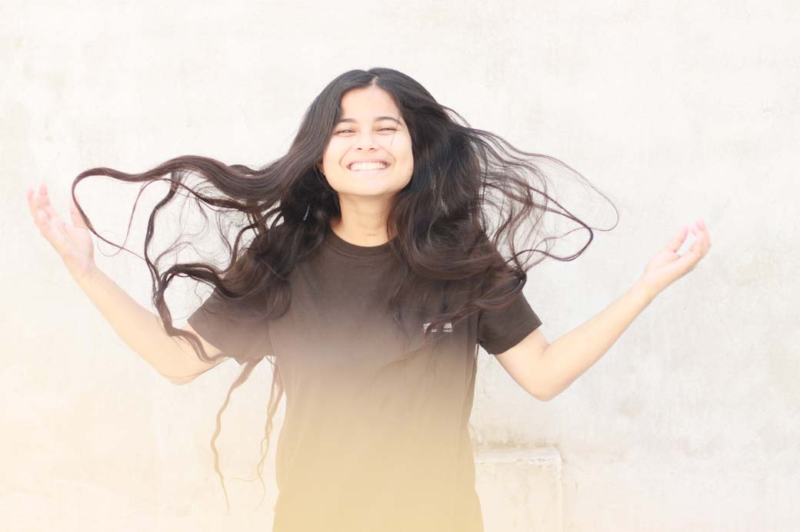

I am a designer who dwells somewhere in the magical world at the junction of technology and aesthetics. I occasionally do bird watching (the feathered ones) and I'm known by the name of “chidi” in the village I reside.
I have always admired nature, art & technology. I wanted to do several things when I was a child, ranging from babysitting to paleontology. I believe design sense (research + understanding + development + iterations) in us develops right from our childhood (we ask questions + cook up stories + make finger puppets + solve puzzles). I was struck by this parallel between the design process and a child’s thinking. I belief the most fluent and simplest form of translation of information to knowledge happens in a child’s mind. Having faced with the genuine challenge in transiting information into a state of knowledge and the role that creativity could play in bridging this gap, I set out to understand this better by working on children’s education and learning.
In March 2014, I founded a creative learning studio called Chlorophile. It is a collective of designer, evolutionary biologist, permaculturist , shepherd and a group of amazingly curious children. Our idea is to design a technology-aided creative environment that fosters the ability to learn, reason and create in any given situation. We wish to understand nature, evolution in biological systems and gain inspiration from the rich biodiversity around us to design products, algorithms and learning environments.
As a part-time commitment, I work at the Eaglenest Wildlife Sanctuary in Arunachal Pradesh [second largest biodiversity in the world] to organize design workshops for tribal children and design products for wildlife conservation.
I am also involved as a design resource person for a Himalayan Blue Sheep research project in Kibber [Spiti] where we conduct design & wildlife conservation workshops for children.
Besides tinkering with both digital & physical materials to build things that entertain & educate, I love to make doodles and eat fried noodles.
I live in Rakkar (Dharamshala), located at the foothills of Dhauladhar Range of the Himalayas.
